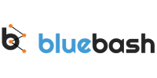

Artificial Intelligence has disrupted almost every industry that you can think of and business owners are looking out for how to build AI agent for their business. If you are such a business owner then finding a capable AI agent development company is the right step forward to your goal. However, in today’s world we are bombarded with information all around us and many companies provide AI agent development services. This makes it difficult for business owners to access quality services because of the sheer number of options out there.
To build a good AI agent you need a high quality service provider that has hands-on experience building these kinds of solutions. If you are a business owner in such a dilemma then this blog will be the holy grail to all your questions. In this blog we will extensively cover the best AI agent development companies you can work with in 2026 and you will learn about how you can choose the right company for your business. We will learn about how these companies operate, how their AI agent development process looks like and what kind of services you can expect from them.
Let’s get started.
A Deep Dive: Exploring The Best AI Agent Development Companies Globally
Generative AI has taken the world by storm and while we hear about everyday have you thought about how AI systems are changing the way businesses interact with their customers? Beyond the craze and the VC frenzy AI agent development companies are helping businesses create a better customer experience for their valuable customers. If you’ve listened to Steve Job’s talks you can hear him speak constantly about the customer first approach that Apple has followed. While it might have been harder for us to understand what “customer first” meant back then Apple’s growth over the years into a Trillion dollar company has shed light on what that might mean. In reality, being customers first means that you put your customers at the center of your business and shape their experience in a way that they are compelled to purchase your products and services.
So, where does an AI agent development company fall into all this? Being a customer first means that you have to provide your customers with the best service from the first touch point they have with your business to after you deliver your products and services. Customer experience that’s cohesive like this takes a lot of time and effort to perfect and that will also use a lot of human resources. You have to be agile about different customer needs and implement customer service professionals round the clock. Another piece of the puzzle is about the convenience of getting things done quickly.
AI agent development companies can help you build tools and solutions that can help you serve your customers in more ways than one. Apart from customer support operations AI agents have revolutionized areas like data driven decision making, personalized experiences, invoice management, asset management and even risk assessment. Businesses have more power at their fingertips than ever with advancements like conversational AI that people can chat with using natural language. However, for you as a business to implement this technology into your workflow you have to understand it deeply. This is why most businesses choose an AI agent development company to build their solutions for them.
We have a list of 10 best companies in the industry that you can choose from. Depending on your business each company has their own strengths that you can capitalize on.
Let’s jump in.
1. Sparkout Tech Solutions Inc.

If you’re not a stranger to full service agencies that work on cutting edge technologies then Sparkout shouldn’t be a new name for you to hear. Sparkout has a rich history of over 7 years in the software development industry and is well known for working with cutting edge technologies like AI, blockchain and IoT.
Being among the top AI agent development companies worldwide Sparkout is known for its keen attention to detail, innovative solutions and user centric designs that allow customers to approach advanced technologies seamlessly. As a pioneer in different emerging technologies like AI Sparkout has helped hundreds of businesses globally in creating scalable products. Sparkout’s industry expertise spans across the likes of fintech, healthcare, travel, logistics, governments and many more. Apart from this Sparkout is also home to over 100 dedicated professionals who have years of real world experience building cutting edge products. One of Sparkout’s highlighting features is that it is an AI agent development company that also follows a client centric approach to product development. This means that Sparkout will work closely with you and your businesses to understand its intricacies and tailor solutions for your business and your customers.
One of the areas Sparkout has made an impact with AI is in the fintech industry with solutions for matching engines. For example in the debt settlement space debt settlement agencies negotiate with creditors on behalf of customers to find a practical way to repay their debt. Sparkout is one of the leading AI agent development companies that has made great strides in this area with an AI powered offer matching engine that matches the best offers from creditors with the customer based on their personal financial profile. This is a game changer for both creditors and DSAs because this removes the mountain of paperwork associated with this operation and allows for seamless debt repayment and recovery.
Another one of Sparkout’s services that helps businesses in the healthcare sector for accessible consultation and easy booking. Sparkout does this through an easy to use chatbot solution that patients can chat with 24/7. As an AI agent development company Sparkout has created these solutions with HIPAA regulatory compliances implemented where users who want a preliminary diagnosis of their symptoms can easily access basic diagnoses quickly and based on the severity of their symptoms the patients can book consultations with a specialist right then and there. This is an innovative take on personalized customer experience in the healthcare sector where data protection, communication and timeliness are many of the challenges to overcome.
Additionally, an area where Sparkout’s AI capabilities stand out is in the logistics and deliveries industry. As one of the leading AI agent development companies in the space Sparkout has high quality services and a revolutionary product to solve supply chain challenges. Sparkout is a leader in traceability and delivery solutions which implements AI for things like route optimization, personalized recommendations systems, inventory management, driver safety through onboard sensor data and many more.
Customer service and support is another area where Sparkout has made great strides with an intelligent document understanding AI solution. This is a game changer for customer service because it is an easy way for businesses to approach customer service without spending weeks or months on training AI models. As a top AI agent development company Sparkout has allowed businesses to integrate a simple to use chatbot for their customer interactions. As a business all you have to do is create a detailed documentation for your customer facing operations or you can upload your existing products and services related documentation, standard operating procedures and any such document into the AI chatbot and the chatbot can seamlessly understand the context of your customers’ queries and help them solve problems 24/7.
Pros:
- Sparkout has an experienced team of over 100 professionals with hands-on experience creating solutions that can scale.
- An early adopter of advanced technologies like AI, blockchain and IoT building solutions for global businesses.
- A full service agency that can transform your businesses by considering many avenues of technology and business.
- A great reputation as one of the leading AI agent development companies and trusted by business for over 7 years.
Cons:
- If you have a project that requires extensive AI agent development like multi-agent systems then the cost for development could be on the higher side.
- Complex projects requirements with extensive AI training could also contribute to longer delivery timelines.
Website - www.sparkouttech.com
2. Infinum
Infinum is a company known for its specialization in creating AI powered solutions and they cover a wide range of industries. They are also great at building custom AI agents and delivering solutions specifically tailored to the needs of their clients.
As an AI agent development company Infinum has a great track record of building solutions for industries like healthcare, finance and retail making them a trusted partner to businesses worldwide. Their team is also worth noting because it is a strong interdisciplinary team with engineers, designers and strategists. One of their goals is to make your digital products functional and user friendly at the same time with of course a focus on scalability. Infinum’s AI agent solutions are known for their robust natural language processing and suitable for businesses looking to create conversational AI agents for use cases like 24/7 customer support.
Pros:
- As one of the experienced AI agent development companies their solutions are known to be client centric and tailored to your business’s unique needs.
- User experience and using optimized design integration is one of their specialties.
- They provide services globally which means that they are well versed in using agile methodologies for project management which helps you optimize project management.
Cons:
- Extensive and tailored solutions for elaborate operations can be expensive if you’re a smaller business which might be a barrier.
- Although their capabilities in conversational AI is commendable they may not put deep focus on newer solutions like generative AI.
- Since their process as an AI agent development company emphasizes iterative design your delivery timelines could be on the higher side.
Website - infinum.com
3. 10 Clouds
In the AI development space 10Clouds is very well known and their niche is in building intelligent AI agents and applications that are data driven. They have many solutions for businesses like virtual assistants, predictive models and automation tools with which you can easily streamline operations and enhance user experiences.
Their services are all AI centric and their headquarters is in Poland. 10Clouds also has a strong team which consists of over 200 professionals very well known for creating scalable solutions using AI. As one of the leading AI agent development companies their focus is on creating robust systems using natural language processing and machine learning so that your customers can interact with your AI agent just like a human agent.
Pros:
- They have good experience with deploying AI agents for a variety of different industries.
- One great highlight about them is that they always try to stay on top of innovation and the latest advancements in AI technology.
- Agile is the methodology they follow for project management which makes the process flexible and adaptable for you.
Cons:
- They are a highly specialized AI agent development company which could mean that you may find their services expensive.
- Their operations outside of the Europe region may be limited which could be a barrier if you are based outside of Europe.
- Their speciality and focus on customized solutions could lead to longer timelines for product delivery.
Website - 10clouds.com
4. Winstarts.ai
If you have a complex problem that you want to solve with AI then Winstarts could be the right choice for you. Their offerings are interesting because they combine machine learning, robotics process automation and natural language processing for chatbot development which makes their solutions specific to use cases.
They are one of the leading AI agent development companies that can provide you with solutions for customer support, data analytics and data driven decision making. Their solutions target dynamic industries like e-commerce and logistics where you as a business have to adapt to changes on the go like for example customer behavior. They have a strong team of data scientists and engineers who can collaborate with you, understand your business and create AI models that closely align with your goals as a business.
Pros:
- Their expertise is very strong when it comes to implementing advanced AI technologies like reinforcement training to create customized solutions.
- As an AI agent development company their solutions are well suited for industries like e-commerce and logistics where you have to be dynamic and adaptable.
- As a high quality service provider they have a deep understanding of sustainability in AI applications and focus on delivering solutions that embody that.
Cons:
- They are a niche agency and may not have a very large team which means that they may not be able to take multiple large scale projects simultaneously.
- If you’re a less tech savvy business you may have to educate yourself to use their solutions.
- They are one of the AI agent development companies that has comparatively less experience in fields like healthcare.
Website - www.solulab.com
5. Instinctools
Instinctools shouldn’t be a name that you haven’t heard and they are known for digital transformation for global businesses with a strong focus on AI development. Their speciality is in creating solutions with AI that can empower businesses with workflow automation, enhancing customer experience and also to get actionable insights from data.
The AI agents they build are known for being effective in areas like sales automation, content personalization and visualization of data. Their focus as an AI agent development company is to make sure that their AI agents on data that is clean, high quality and geared towards maximum accuracy and efficiency. They also have strong industry expertise in areas like retail, manufacturing and education. Regardless of the innovation they provide they are a highly collaborative company and will work together with you throughout your project to help you meet your goals.
Pros:
- Their major expertise in creating AI agents that are data driven and optimized.
- Their industrial expertise include retail, manufacturing and education with a strong focus on providing customized solutions as one of the major AI agent development companies.
- One great thing about their work process is that it is geared towards transparency and collaboration to give you a highly tailored solution.
Cons:
- One of their major highlights is that they give good emphasis to using high quality data to train their AI agents which will result in quality but the delivery timelines may extend.
- Since they are a highly data oriented company their AI agent development cost could be on the higher side.
- Their major focus is on creating AI agents for things like customer support which may mean that their focus on generative AI is limited as an AI agent development company.
Website - www.instinctools.com
6. Ampcome
Ampcome is a company that is known for building AI agents that are cutting edge as well as being a software solutions provider. They have gained prominence in the last few years because of their innovative approach when it comes to developing AI agents.
Their solutions are known for their intelligent automation and process optimization and Ampcome offers solutions with AI that are designed to streamline complex workflows and improve the accuracy of your decision making process. Ampcome’s specialty is in combining machine learning, cognitive computing and data analytics to give you solutions that are highly customized and tailored to your customers. As one of the leading AI agent development companies Ampcome is also a leading provider of AI solutions for industries like logistics, banking and retail.
Pros:
- Their focus is very strong when it comes to building solutions that are scalable and adaptive.
- Their expertise is majorly in intelligent automation for optimizing various processes of your business.
- They also have a focus on delivering solutions rapidly and effectively use agile methodologies for achieving this.
Cons:
- They are a specialized service provider with a focus on building complex solutions for business problems which may not prioritize smaller projects.
- As an AI agent development company they focus on specialized solutions that are customized which may increase their AI agent development cost.
- Their industry specific focus may not be as extensive as some other companies which may be a barrier if you’re planning to build AI agents for niche industries.
Website - www.ampcome.com
7. Damcogroup
If you think their name sounds fancy, that's because the Damco Group has been a world leader in IT and AI solutions for a long time. They are renowned for creating comprehensive solutions for various purposes like AI agent development, cloud solutions and enterprise software.
They are one of the AI agent development companies that excel in creating AI agent solutions that are tailored for customer support, predictive analysis and operational automation. Their experience spans over 2 decades and their client base can be found worldwide and is diverse with the likes of healthcare, education and insurance. The AI agent solutions they build combine natural language processing and machine learning to help you in effective communication and decision making.
Pros:
- They have an extensive track record of building AI solutions that spans across two decades.
- They have strong expertise in diverse industries as an AI agent development company and can provide you with highly versatile solutions.
- They have a strong global presence with resources located all across the world which allows you to work with them regardless of where you are.
Cons:
- Since they are an experienced company with a comprehensive development process their delivery timelines could be on the higher side.
- Due to the scale of their operations building customized AI agents they may not align with your requirements if you’re looking for affordable AI agent development.
- Their major focus as one of the leading AI agent development companies is on providing enterprise solutions which may be a barrier if you’re a smaller business.
Website - www.damcogroup.com
8. Bluebash

Bluebash is an emerging company in the AI development space and they are known for their innovative approach to creating solutions for businesses that are AI driven. They majorly work with startups and mid sized businesses and have a keen focus on affordable AI agent development.
Apart from that their solutions are also known for being highly user friendly and efficient when it comes to task automation. As a top AI agent development company they specialize in building conversational AI, predictive analysis and recommendations systems which makes their solutions the go to option for e-commerce brands and service based industries. One of their major highlight features is cheap Agent development which ensures that you can access the wonderful benefits of AI agents even if you are a smaller business.
Pros:
- Their solutions are geared towards being cost effective so that it is accessible to small and medium sized businesses.
- Their focus is also strong when it comes to building AI agents that are highly user friendly in nature.
- As one of the leading AI agent development companies they are very strong when it comes to building conversational AI and recommendation systems.
Cons:
- Their limited number of resources may be a barrier if you have a very large project.
- Because of their smaller team size and comprehensive nature of services their delivery timelines could be on the longer side.
- Their major focus is on chatbot development and recommendation systems which may be a barrier if you’re looking for generative AI solutions.
Website - www.bluebash.co
9. Eleks
Eleks is a company that is globally renowned for being a software development company with expertise in AI agent development. They are an AI agent development company that specializes in creating AI agents majorly for enterprise businesses and they can provide you with solutions for predictive analysis, automation and customer engagement.
They are experts in building robust AI solutions that can give you measurable results and can help your business enhance its productivity as well as customer satisfaction. Eleks’ team is also noteworthy and is multidisciplinary which includes AI experts, data scientists and developers which ensures that they take a holistic approach to developing your AI agent. Additionally, their development process is quite extensive and focuses highly on security which ensures that your AI agent complies with global data protection standards.
Pros:
- As one of the top AI agent development companies their expertise is high when it comes to creating secure solutions that are enterprise grade.
- Their emphasis is on creating highly customized solutions that can cater to your business needs and is tailored to your customers.
- As a trusted player in the AI development space they have a keen focus on building solutions that emphasize data protection and compliance.
Cons:
- Because their focus is mostly on the enterprise side their costs may seem expensive if you’re a smaller business or startup.
- If your product requires extensive customization then it can contribute to longer timelines.
- As an experienced AI agent development company their focus is on building tools for the enterprise which may limit their focus on building generative AI solutions.
Website - www.eleks.com
10. Openxcell
OpenXcell is a well known software development company and high quality provider of AI solutions. Their major focus is on creating AI agents that are smart and can help you increase the operational efficiency of your business and customer engagement.
Their specialties include building AI agents for tasks like virtual assistants, fraud detection and process automation. They have a good reputation for building high quality AI agent solutions with a team that has deep expertise in different AI agent frameworks. As one of the leading AI agent development companies OpenXcell creates products that leverage machine learning and natural language processing to give you intelligent and context aware AI agents. Their approach is highly customer centric and ensures that their solutions align with your strategic goals as a business.
Pros:
- Their engagement model is highly flexible and can provide you with tailored services regardless of the size of your business.
- They are known for creating highly intelligent AI agents with deep expertise in machine learning and natural language processing.
- They are majorly customer centric and make sure that they align their solutions with your specific goals as a business.
Cons:
- As a top AI agent development company their process is very comprehensive and their presence outside North America and Asia is limited which could result in scheduling challenges.
- If your project demands advanced features that require extensive development then it may carry additional costs.
- Since their solutions are advanced, integrating them with your existing legacy systems could be a complex process.
Website - www.openxcell.com
How an AI Agent Development Company Solves Real-Time Business Problems
Developing AI agents comes with its own set of technical and operational challenges, which leads to slowing down the entire workflow. However, with the right AI agent development company, these issues can be handled smoothly through expertise and proven engineering practices.
Inaccurate Reasoning
AI agents might misinterpret tasks or generate inaccurate
outputs. In this situation, an AI agent development company use specialized reasoning frameworks and
strict validation steps to keep the AI agent accurate and reliable.
Weak Context Memory
Usually, AI agents struggle to remember past interactions,
ongoing tasks, and user preferences. A pro team, on the other hand, builds robust memory modules,
structured context layers, and custom logic to maintain continuity.
Difficult Tool & API Integrations
Linking agents with CRMs, databases, and
third-party APIs will be quite tricky. A skilled development team use proven integration pipelines and
custom connectors to ensure safe and smooth interactions.
Security & Access Control Issues
When dealing with sensitive data, there’s a
high risk of leaks and unauthorized access. An expert team will implement permission-based access,
encrypted data flows, and compliance practices to keep the data safe and under control.
Finishing Up Our Top 10 AI Agent Development Companies in 2026
Creating an AI agent for your business can be highly rewarding because it allows you to optimize your customer interactions through high levels of automations. Additionally, AI agents also give you the capability of addressing customer needs 24/7 which makes them a powerful tool for business growth. So far we have covered 10 of the best AI agent development companies for 2026 and while they are of high quality some of them will have specialties that will be relevant to your business requirements. Hiring an experienced agency that knows the advantages & disadvantages of an AI agent is crucial because they can build you solutions that overcome these disadvantages and tailor your solution to the goals of your company.
If you found this conversation about AI agent development companies helpful then consider sharing it with a founder or business owner for whom this might be helpful.